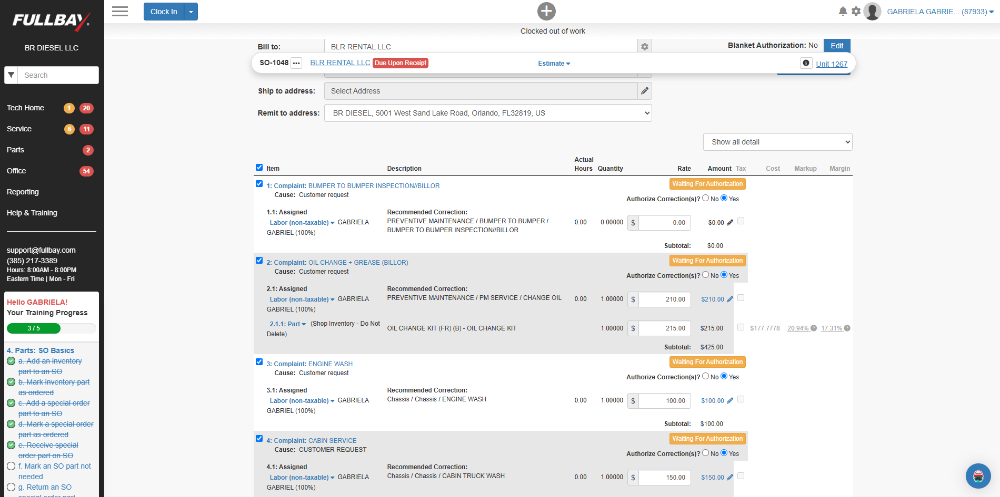
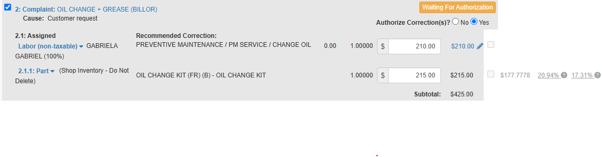
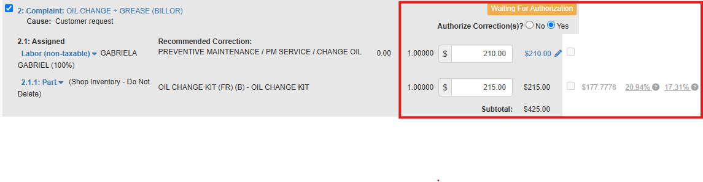
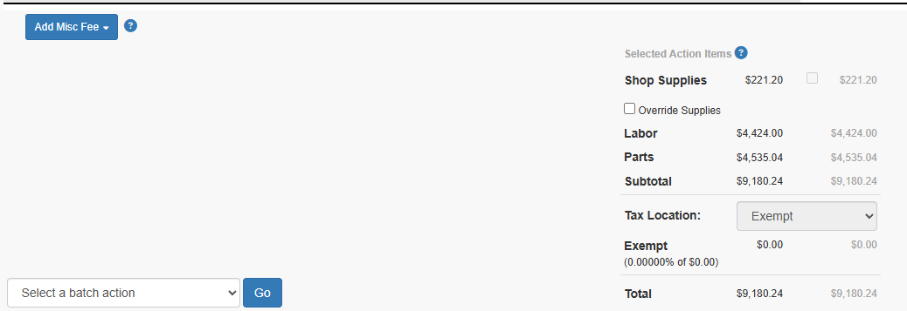

Manual de Treinamento Fullbay
This manual presents the main processes used in Fullbay.
Este manual apresenta os principais processos usados no Fullbay.
🔧 Creating a Service Order
Objective
Register a new Service Order for a client.
Registre uma nova Ordem de Serviço para um cliente.
Step 1 - Start the Order
1.1. Click the indicated button.
1.1. Clique no botão indicado.
1.2. In the following options:
1.2. Nas opções a seguir:
1.2.3. Choose: Sales
1.2.4. Then: Service Order

Demonstration video:
Vídeo demonstrativo:
Step 2 - Customer
On this screen, there are three options to add the Customer:
Nesta tela, há três opções para adicionar o Customer:
2.1. Option 1: Search for the name in the search field.
2.1. Opção 1: Pesquise o nome no campo de pesquisa.
2.2. Option 2: Add a new one by clicking New Customer.
2.2. Opção 2: Adicione um novo clicando em New Customer.
2.3. Option 3: Choose from the list.
2.3. Opção 3: Escolha na lista.

For situation 2.2, New Customer, add the requested information and click Save.
Para a situação 2.2, New Customer, adicione as informações solicitadas e clique em Save.

If the customer is already registered in the database, once you find them and click their name, you will have the option to specify the contact person requesting the service or leave the company itself.
Se o cliente já estiver cadastrado no banco de dados, ao encontrá-lo e clicar no nome, você terá a opção de especificar o contato solicitante do serviço ou deixar a própria empresa.
2.4. Next, it is necessary to add the Unit where the service will be performed.
2.4. Em seguida, é necessário adicionar a Unit em que o serviço será realizado.
The system displays a list of Units registered for the customer, or you can add a new one under New Unit (2.4.1).
O sistema exibe uma lista de Units cadastradas para o cliente, ou você pode adicionar uma nova em New Unit (2.4.1).

2.4.1. If you need to add a New Unit, the screen with the required information is as follows:
2.4.1. Se você precisar adicionar uma New Unit, a tela com as informações necessárias é a seguinte:

Step 3 - Complaint
3.1. In Action Items, add the Customer Complaint:
3.1. Em Action Items, adicione o Customer Complaint:
3.1.1. For each Complaint for which a specific solution is expected, write it and click Add.
3.1.1. Para cada Complaint para o qual se espera uma solução específica, escreva-o e clique em Add.
OR
3.1.2. Select one of the options available under: Add Access / Return Item, Unit PM, Pending Repair, Global Service, or Service Package.
3.1.2. Selecione uma das opções disponíveis em: Add Access / Return Item, Unit PM, Pending Repair, Global Service, or Service Package.

3.2. On this same screen, it is also possible to associate the Service Order being created with a purchase order number from the company/client, and you can even pre-authorize an amount for the service.
3.2. Nesta mesma tela, também é possível associar a Service Order que está sendo criada a um purchase order number da empresa/cliente, e você pode até mesmo pré-autorizar um valor para o serviço.

3.3. The last thing required for the system to allow opening the Service Order is to assign a technician.
3.3. A última coisa necessária para o sistema permitir a abertura da Service Order é designar um técnico.
You can also add notes and choose whether the client can view them or not.
Você também pode adicionar notas e escolher se o cliente pode visualizá-las ou não.

3.4. Check that all the information entered is correct and click Create.
3.4. Verifique se todas as informações inseridas estão corretas e clique em Create.

Demonstration video of the complete step-by-step:
Vídeo demonstrativo do passo a passo completo:
🔍 Defining the Diagnose

1. Check the Complaints; in some cases, separate them to specify them.
1. Verifique os Complaints; em alguns casos, separe-os para especificá-los.
2. For each Complaint, specify the Cause; when it is not a specific problem, fill in CUSTOMER REQUEST.
2. Para cada Complaint, especifique a Cause; quando não for um problema específico, preencha com CUSTOMER REQUEST.
2.1. When it is not filled in, specify the estimated work time.
2.1. Quando não for preenchido, especifique o tempo estimado de trabalho.
3. Example of service addition - Action Item - with part addition.
3. Exemplo de adição de serviço - Action Item - com adição de peças.
Specification of the Parts in the Action Items section.
Especificação das Parts na seção de Action Items.
The Parts can be added through Part# or Descriptions. As they are typed, the system options tend to load.
As Parts podem ser adicionadas por Part# ou Descriptions. À medida que são digitadas, as opções do sistema tendem a carregar.
- Although they appear, the cost prices are not editable on this page, only in the Estimate section.
- Embora apareçam, os preços de custo não são editáveis nesta página, apenas na seção Estimate.

Objective
Check all the estimate.
Checar todo o orçamento.
Estimate
No FullBay, you can see this heading. All things that we did unil now is on: Action Itens.
No FullBay, você pode ver este título. Todas as coisas que fizemos até agora estão em: Action Itens.
Now we will go to the Estimate section, where we can see all the parts and services that we added in the Action Itens section.
Agora vamos para a seção Estimate, onde podemos ver todas as peças e serviços que adicionamos na seção Action Itens.

On this page, we can change the Price of the parts and services that we added in the Action Itens section.
Nesta página, podemos alterar o Price das peças e serviços que adicionamos na seção Action Itens.
We need to check every part and service that we added in the Action Itens section, because we need to check if the Price and Quantity are correct.
Precisamos verificar cada peça e serviço que adicionamos na seção Action Itens, porque precisamos verificar se o Price e a Quantity estão corretos.
Every service can see like below:
Cada serviço pode ser visto como abaixo:

On indicate section, at the right side, you can edit the amout price and see the cost price, the percent of profit and the total price of the service.
Na seção indicada, no lado direito, você pode editar o preço do valor e ver o preço de custo, a porcentagem de lucro e o preço total do serviço.

You need to check every part, labor and part. Then, you can scroll down and check the final price.
Você precisa verificar cada peça, mão de obra e peça. Em seguida, você pode rolar para baixo e verificar o preço final.
Remember: BILLOR has all specifications about tax on the system, so you don't need to worry about it.
Lembre-se: BILLOR tem todas as especificações sobre impostos no sistema, então você não precisa se preocupar com isso.
But if you have another customer and need to change the tax, you can click on the Tax button and change it.
Mas se você tiver outro cliente e precisar alterar o imposto, poderá clicar no botão Tax e alterá-lo.
You need to add CCE if you have another customer that will pay by credit card.
Você precisa adicionar CCE se tiver outro cliente que pagará com cartão de crédito.

At the end, you cann see the Autorizaçtion Methods, and to send by e-mail you need to click on Request Authorization in the middle section.
No final, você pode ver os Métodos de Autorização, e para enviar por e-mail, você precisa clicar em Request Authorization na seção do meio.
After that, we need to wait the customer authorization and take care to request just the right services and parts that the customer authorized.
Depois disso, precisamos aguardar a autorização do cliente e tomar cuidado para solicitar apenas os serviços e peças corretos que o cliente autorizou.